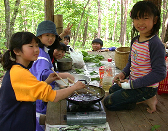
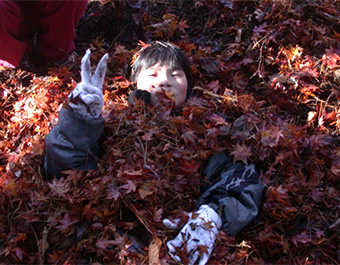
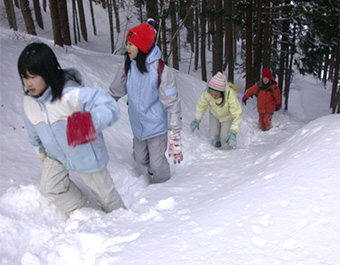
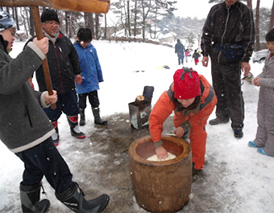
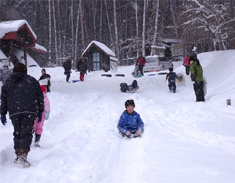
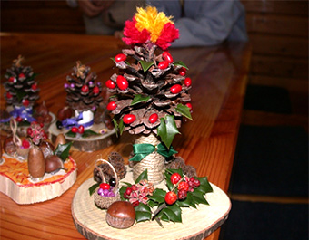

森遊びコラム
「あかばやし探検隊」など、園内の体験活動で実際に撮影された一コマから、森あそびの様子を少しずつ紹介しています。まだ数は少ないですが、これから育てていくページです。

火おこし作業中！
あかばやし探検隊の一コマ。マッチに頼らず、道具と工夫で火をおこす体験の様子です。

夏の川遊び
つどいの森周辺の沢や川で水に親しむ、夏らしい野外プログラムの一コマです。

木登り名人
園内の木に登ってみる体験。高さや枝ぶりを見きわめる、子どもたちの真剣な表情が印象的です。

ネイチャークッキング
野外で食材を調理する「ネイチャークッキング」。森の中で食べるごはんは格別です。

自然観察
園内の植物や生きものをじっくり観察する時間。森林インストラクターの指導のもとで学びます。

落葉お風呂
集めた落ち葉に埋もれて遊ぶ、秋ならではの一コマ。ふかふかの感触が子どもたちに大人気です。

目指せ、いただき！
赤林山への山登りに挑戦するプログラム。頂上を目指して歩き切った達成感が魅力です。

ペッタンコペッタンコ
杵と臼を使った餅つきの一コマ。かけ声とともに、みんなで力を合わせてつきあげます。

気分はエスキモー
雪を使ったイグルーづくりなど、冬ならではの雪あそびプログラムの様子です。

雪そり遊び
カラマツの斜面を使った雪そり。冬のつどいの森を思いきり滑り降ります。

どんぐりのトナカイ工作
拾ったどんぐりや松ぼっくりを組み合わせて作る、森林創作実習館での工作の一コマです。

木の実で作るミニ工作
木の実や木片を使った工作の様子。ひとつひとつ表情の違う作品が仕上がります。
はじめてのキャンプ、持ち物チェックリスト
準備中：バンガロー・キャビン泊に必要な持ち物をまとめる予定です。
雨の日でも楽しめる森あそび
準備中：雨天時のおすすめの過ごし方をまとめています。
あなたの「森遊び」の一コマも教えてください
園内で見つけたお気に入りの遊び方や、体験活動の思い出があれば、ぜひ管理棟スタッフまで。コラムとしてご紹介させていただくことがあります。